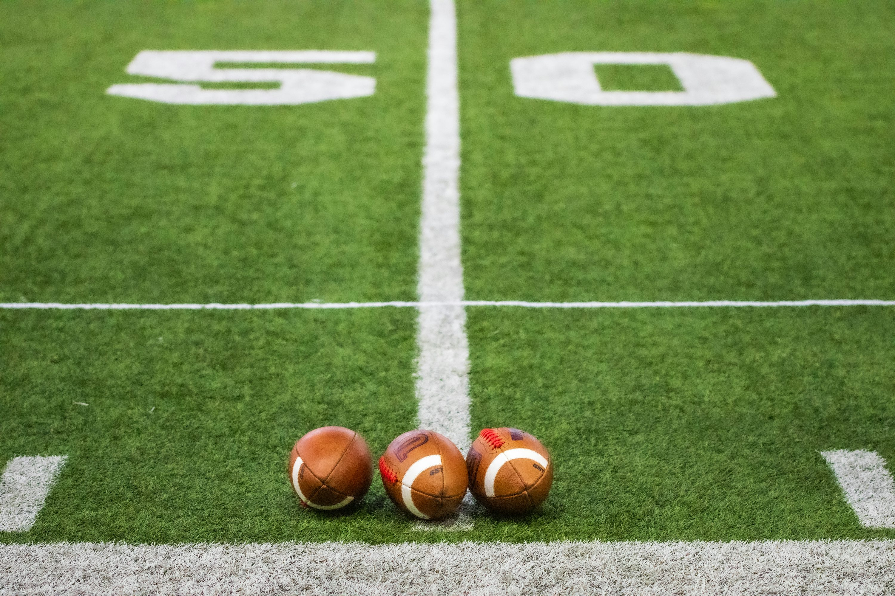

Prepare with Purpose
Identify league rules, roster requirements, and priority positions before the draft begins.

Draft Day HQ turns the biggest fantasy football decisions into clear, practical steps for every week of the season.
Get StartedUse a simple process to prepare for your draft and make confident decisions all season long.
Identify league rules, roster requirements, and priority positions before the draft begins.
Balance dependable starters with high-upside players to build a roster that can improve all season.
Check byes, injuries, and opponents before setting a lineup or making a waiver-wire move.
Follow this repeatable routine from Sunday through Tuesday to make focused decisions for the next matchup.
Keep draft preparation and trade conversations organized with a plan.
Keep league settings, pick order, player notes, and a backup plan together before the draft starts.
Use the ChecklistLook for a matchup between your roster needs and another manager's depth before starting a trade conversation.
Review the PlaybookJoin the Draft Day HQ huddle and use the season plan to organize your draft prep, lineup decisions, and weekly goals.
Request the Draft Checklist